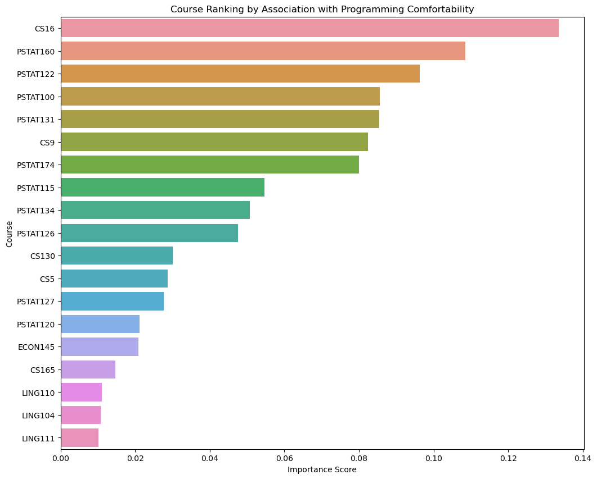

Analysis of class surveys
Which courses are most strongly associated with higher programming comfort among students?
Executive summary
Joy’s portion of the analysis used random forest models to identify and rank the courses most strongly correlated with higher programming comfort. The analysis reveals that CS16, PSTAT 160, and PSTAT 122 are the most important predictors overall. Additionally, we find that this ranking of important courses differs significantly based on a student’s prior math proficiency, which will be elaborated in the Findings section.
Questions of interest
The analysis aimed to identify which courses were most strongly associated with students’ comfort in programming. Specifically, we addressed the following question:
- What are the top five courses that are most correlated with higher self-reported programming comfort among students?
- Does math proficiency influence the ranking of the importance of courses as predictors for programming comfort? (explored using a random forest model)
Findings
Summarize your results. Don’t try to explain every step you took; focus instead on providing the main data analytic outputs – tables and figures – and explaining clearly what they show. Clarify any important decisions you made in obtaining them. You can display codes if you like but it is not necessary.
Random Forest - Joy
RQ1: Overall Course Importance
First, we fit a model using the entire dataset to identify the courses with the strongest overall association with programming comfort. The “feature importance” score from the model measures the strength of this association. The chart below shows the top 10 most important courses.
It is worth noting that while feature importance reveals the strength of the relationship, it does not show the direction (i.e., whether taking the course is linked to higher or lower comfort). Therefore, the top courses shown below are only the most strongly correlated with programming comfort, but they may correlate with a higher or a lower degree of programming comfort. Despite this shortcoming, the feature importance of the random forest model has an advantage in being able to measure a predictor’s importance holistically, in the context of all other predictors. Unlike a simple correlation, which assesses only the isolated, bivariate linear relationship, the random forest’s non-linear structure accounts for interaction effects. This means the importance score of a course already reflects its conditional value, or how its contribution to programming comfort changes based on the presence or absence of other courses.
The top courses most strongly associated with programming comfort are CS 16, PSTAT 160, PSTAT 122, PSTAT 100, and PSTAT 131, which is reasonable since all of these courses except for 160 are programming-based. It is natural that the students who have taken these courses are more or less comfortable with programming, depending on their performance in and feelings for these courses.
| Course | Importance |
|---|---|
| CS16 | 0.133585 |
| PSTAT160 | 0.108485 |
| PSTAT122 | 0.0963313 |
| PSTAT100 | 0.0855638 |
| PSTAT131 | 0.0854055 |

RQ2: The Influence of Math Proficiency
To determine if the importance of courses changes based on a student’s background, we split the dataset into three groups: those with ‘advanced’ math proficiency, those with ‘intermediate’ proficiency, and those with ‘beginner’ proficiency.
We then ran the Random Forest analysis separately for each group. The subgroup whose math proficiency is ‘beginner’ is too small (n=3) to perform an analysis, so only the ‘advanced’ and ‘intermediate’ groups are kept and analyzed.
The comparison table below clearly shows how the ranking of the importance of courses as predictors for programming comfort changes when we take math proficiency into consideration. We can observe that CS 16, PSTAT 100, PSTAT 122, and PSTAT 160 remain the strongest predictors as in the overall course importance analysis. Their rankings change slightly - for example, PSTAT 100 becomes the most strongly correlated predictor for the group with intermediate math proficiency. Additionally, PSTAT 134, PSTAT 174, and CS 9 are included as the top predictors. These changes can be explained by the different learning paths for each group. For the ‘Math Intermediate’ students, foundational courses like PSTAT 100 and CS 9 are among the top predictors, as these courses establish the statistical and programming logic. Conversely, the ‘Math Advanced’ group, which already has this foundation, is more influenced by specialized, high-level courses like PSTAT 134 and PSTAT 174, although the foundational courses like CS 16 and PSTAT 122 are still highly important to them. This suggests that for advanced students, programming comfort is driven by applying their quantitative skills to more specific problems.
| Rank | Course (adv) | Importance (adv) | Course (int) | Importance (int) |
|---|---|---|---|---|
| 1 | CS16 | 0.157618 | PSTAT100 | 0.144121 |
| 2 | PSTAT122 | 0.0982008 | CS16 | 0.138668 |
| 3 | PSTAT134 | 0.0944759 | CS9 | 0.103457 |
| 4 | PSTAT174 | 0.0862864 | PSTAT122 | 0.0978085 |
| 5 | PSTAT160 | 0.0859582 | PSTAT160 | 0.0905109 |